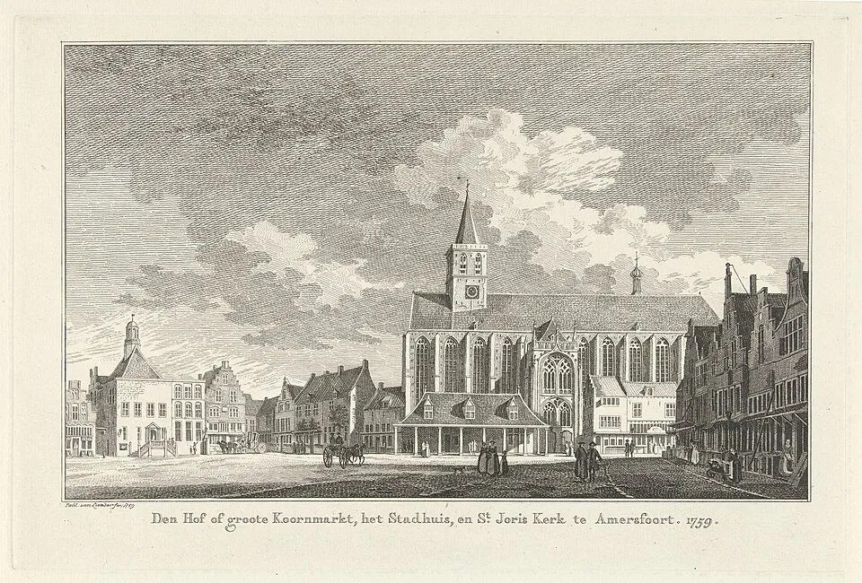
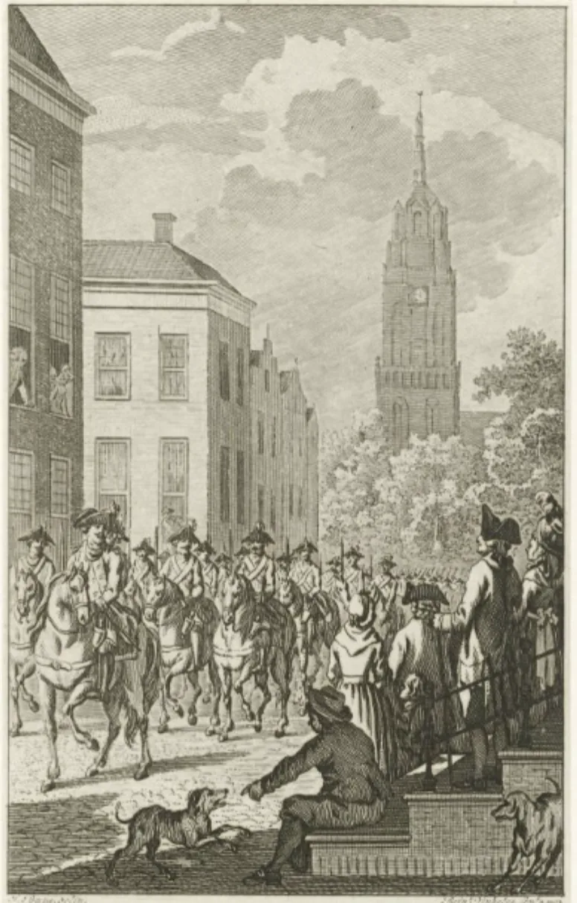
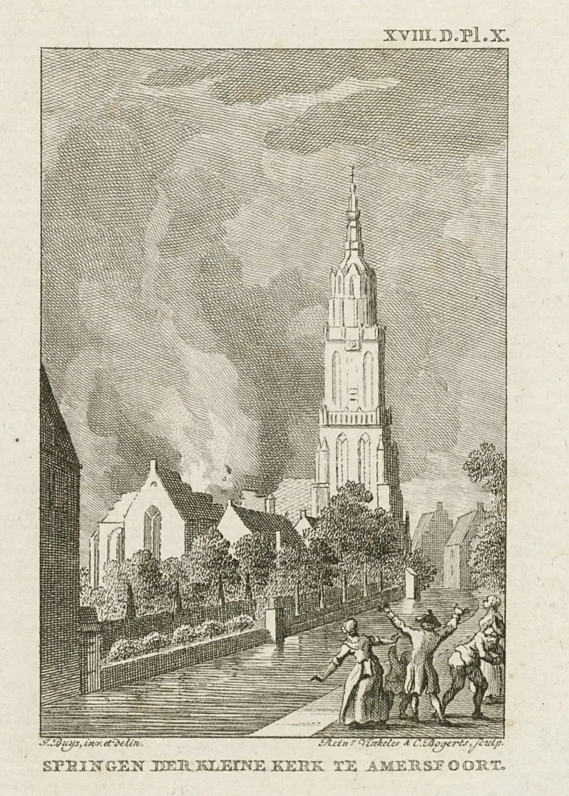

Havik
Dagelijks leven en handel worden verstoord door militair transport door de straat.
Amersfoort, zomer 1787
Op vier plekken in de binnenstad verandert Amersfoort voor je ogen. Je volgt drie inwoners terwijl geruchten, militair transport en de dreiging van een Pruisische inval de stad steeds verder onder druk zetten.
Wat beschermt een stad — en wanneer wordt bescherming zelf een gevaar?
Twee steden op dezelfde plek
Je staat op de echte plek, zet de bril op en ziet dezelfde horizon veranderen in het Amersfoort van 1787.
Je verlaat Amersfoort niet om het verleden te zien. Het verleden verschijnt op de plek waar je al staat. De gevel voor je, de straatstenen onder je voeten en de torenspits boven je blijven hetzelfde punt in de stad — alleen het licht, het geluid en de mensen eromheen veranderen.
De wandeling tussen de vier locaties hoort bij het verhaal. Ook het moment waarop je de bril weer afzet en terugkeert in het huidige Amersfoort maakt deel uit van de ervaring.

Dezelfde plek, twee tijden
Deze prent uit 1759 toont De Hof nog geen dertig jaar voor het verhaal van Tijdspoort zich hier afspeelt. Het plein, het stadhuis en de Sint-Joriskerk liggen er vrijwel hetzelfde bij als op de dag dat marktgeluid plaatsmaakt voor onrustige geruchten.
Zo begint de tijdreis
Een korte, praktische uitleg van wat je onderweg kunt verwachten.
Je krijgt de VR-bril en een korte introductie op het verhaal van 1787.
Te voet ga je langs vier plekken in de historische binnenstad, op je eigen tempo.
Zodra je stilstaat, verschuift dezelfde plek voor je ogen naar het Amersfoort van 1787.
Vier locaties, één doorlopend verhaal
Drie terugkerende personages verbinden de locaties tot één verhaal, van het eerste onraad tot de gevolgen ervan.
Dagelijks leven en handel worden verstoord door militair transport door de straat.
Tussen marktgeluid en geruchten groeit het wantrouwen tussen stadgenoten.
De verdwenen kapel keert terug, vlak voordat alles kantelt.
De muren beschermen de stad, maar houden mensen ook binnen.

Havik, 1787
Op Havik draait het leven om handel en familie. Militair transport door de smalle straten verandert dat ritme: buurtgenoten kijken elkaar aan en vragen zich af wat dit voor de stad betekent.
De Trojaanse veiligheidsparadox
Muren, poorten en opgeslagen wapens moesten Amersfoort beschermen. Het buskruit dat ter verdediging in de Onze Lieve Vrouwekapel lag, vormde tegelijk een gevaar midden in de stad. Wij noemen dit de Trojaanse veiligheidsparadox: bescherming kan onbedoeld nieuwe kwetsbaarheid creëren.
Die vraag stopt niet bij 1787. Digitale infrastructuur, energievoorziening, defensie en sociale structuren beschermen ons vandaag op vergelijkbare wijze — en roepen vergelijkbare vragen op. Tijdspoort maakt je nieuwsgierig naar die vergelijking, zonder een antwoord voor te schrijven.
Lees meer over de beleving
Het kantelpunt
Deze prent toont het moment waarop de opgeslagen munitie in de Onze Lieve Vrouwekapel ontploft. De kapel zelf bestaat niet meer, maar de plek is nog altijd te bezoeken op het Onze Lieve Vrouwekerkhof.
Onderwijs
Voor het voortgezet onderwijs bouwt Tijdspoort de ervaring uit met vijf stappen: beleven, bespreken, onderzoeken, afwegen en formuleren. Leerlingen ervaren eerst 1787 op locatie en onderzoeken daarna hoe bescherming, vertrouwen en afhankelijkheid ook vandaag samenhangen.
Bekijk de onderwijspaginaKies je bezoek
Amersfoort 1787 is te beleven door individuele bezoekers, scholen en groepen.
Beleef de route zelfstandig, alleen of samen met anderen.
Lees meer over de belevingVoor schoolklassen die de geschiedenis van Amersfoort actief willen ervaren.
Bekijk de onderwijspaginaVoor groepen en bedrijven die samen door de tijd willen reizen.
Bekijk de groepspaginaHistorische en artistieke zorgvuldigheid
Historici, culturele organisaties en technologische partners werken samen aan de route. Personages en dialogen zijn fictief, maar de politieke spanningen, de munitieopslag en de ontploffing zijn gebaseerd op historisch onderzoek.
Wie het verhaal bouwt
Studio Enversed werkt als artistiek producent aan de VR-belevingsroute. Historisch adviseurs Gerard Raven en David de Vries bewaken de historische juistheid van het verhaal, op basis van lokale bronnen en samenwerking met Amersfoortse erfgoedpartners.
Blijf op de hoogte
Ontvang bericht zodra de eerste tickets beschikbaar zijn. Ook voor scholen, groepen, bedrijven en mogelijke partners horen we nu al graag van je interesse of samenwerkingsideeën.
Hoe Tijdspoort ontstond
De inspiratie voor Stichting Tijdspoort vindt haar oorsprong in Havik 47, waar de familie Van Ramselaar al meer dan 75 jaar antiek en erfgoed bewaart. Waar eerdere generaties voorwerpen en verhalen bewaarden, gebruikt Tijdspoort nieuwe technieken om ook de verhalen erachter toegankelijk te maken.
"Ik ben trots op onze familie en hoe we generaties erfgoed en antiek hebben bewaard, en dit nu levendig kunnen doorgeven aan iedereen." — Henk van Ramselaar
De familie
De oorsprong van Stichting Tijdspoort ligt mede bij de familie Van Ramselaar, die al 75 jaar verbonden is met antiek, erfgoed en de stad Amersfoort.
In 1950 richtte Gerardus van Ramselaar Firma G. van Ramselaar & Zonen op. Zijn zoons Gerard en Henk namen het familiebedrijf over en bouwden het gezamenlijk verder uit. Beiden waren van even groot belang voor het behoud van de zaak, het opgebouwde vakmanschap en de bijzondere collectie. Met hun kennis van antiek, kunst, sieraden en historische voorwerpen hielden zij niet alleen een onderneming in stand, maar ook een tastbare verbinding met het verleden.
De broers waren daarnaast nauw verbonden met het Amersfoortse voetbal. Gerard – binnen de familie bekend als Muus – speelde in lokale elftallen. Henk bouwde een markante loopbaan op in het betaalde voetbal en kwam als onverzettelijke verdediger uit voor HVC, RCH, Blauw-Wit en SC Amersfoort. Hij speelde bij RCH samen met Johan Neeskens en werd later landelijk bekend door de langste schorsing uit de geschiedenis van het Nederlandse profvoetbal. Na zijn voetbalcarrière bleef hij actief als antiquair en beëdigd taxateur.
Het monumentale pand aan Havik 47 vormt de thuisbasis van deze familiegeschiedenis. Het rijksmonument, historisch bekend als Het Verdwaalde Schaap, staat aan de voormalige middeleeuwse haven van Amersfoort. Hier komen de geschiedenis van de stad, het pand en drie generaties Van Ramselaar samen.
Stichting Tijdspoort zet deze traditie op eigentijdse wijze voort. Waar Gerardus, Gerard en Henk historische voorwerpen onderzochten, waardeerden, bewaarden en doorgaven, gebruikt Tijdspoort nieuwe technieken om ook de verhalen erachter toegankelijk te maken. Met virtual reality en historische routes brengen we het verleden van Amersfoort opnieuw tot leven.
De middelen veranderen, maar de kern blijft hetzelfde: waardevol erfgoed zorgvuldig bewaren en beleefbaar doorgeven aan volgende generaties.

Organisatie
Stichting Tijdspoort werkt volgens de Governance Code Cultuur, met een duidelijke scheiding tussen bestuur en uitvoering.
Initiatiefnemer van het project en nazaat van de familie Van Ramselaar. Stuurt de dagelijkse uitvoering, partners en leveranciers aan en bewaakt kwaliteit, planning en budget.
Kleindochter van de oprichter van Havik 47. Ondersteunt de operationele uitvoering en bouwt de vrijwilligersorganisatie op voor na de opening van de route.
Pam Groenestein — voorzitter
Isabel van der Leij — penningmeester
Mourad El Amry — secretaris
We komen graag in contact met erfgoedinstellingen, fondsen, scholen, bedrijven en andere betrokken partners.
Beleidsdocumenten, jaarverslagen en bestuursinformatie worden hier later beschikbaar gemaakt. Neem ook een kijkje op de ANBI & transparantie-pagina.